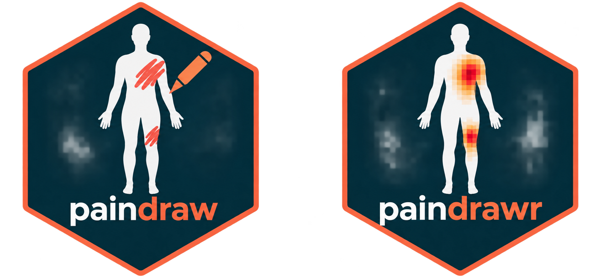
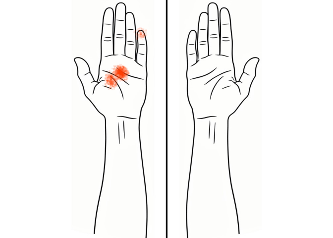
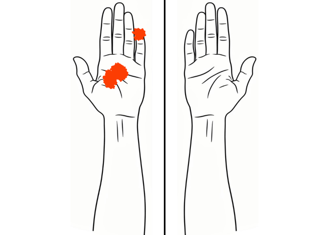
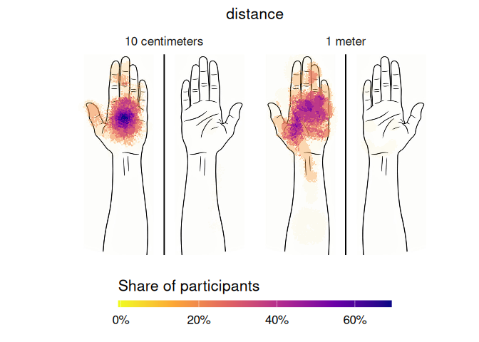

paindrawr is an R package for analysing and visualising pain drawings — illustrations on which patients indicate where they experience pain. Pain drawings typically use a full-body outline but can also focus on specific anatomical regions.
The package provides tools to import pain drawing data, visualise the marked areas, and quantify pain location, distribution, and extent. This allows researchers to turn patient-reported pain drawings into quantitative data for statistical analysis.
Pain drawings have traditionally been scored by dividing the body into a fixed set of anatomical regions and recording, for each region, whether it was marked or not. Modern digital tools (web and tablet apps) instead capture each drawing as a series of pen-stroke x/y coordinates. This coordinate-based data is far richer, but it is also harder to work with. paindrawr provides a consistent workflow for turning that raw coordinate data into figures and quantitative summaries.
Installation
You can install the development version of paindrawr from GitHub with:
pak::pak("steenharsted/paindrawr")Collect with paindraw. Analyse with paindrawr.

paindraw is a REDCap external module for collecting digital pain drawings.
paindrawr is an R package for importing, quantifying, analysing, and visualising pain drawings.
Together, they provide a workflow from digital data collection to research-ready results.
Typical workflow
paindrawr functions are organised around a common analysis pipeline:
-
Import raw drawings:
pdr_import_json(),pdr_import_png() -
Check individual drawings against the background image with
pdr_plot_xy(), to confirm face validity and to decide how to rasterise them -
Rasterise the strokes to an RGBA array with
pdr_add_rgba(). Choosepolygon = "none"to keep strokes as drawn, or"pen","spray"or"both"to render them as filled polygons. -
Quantify the marked areas:
pdr_summarize_rgba() -
Visualise the results:
pdr_plot_xy(),pdr_plot_rgba(),pdr_plot_rgba_heatmap()
Data structure
paindrawr works with a tibble in which each row is one respondent. The pain drawings live in a dedicated list-column (named pdr_data by default, but any name can be used), so that each drawing, with its metadata, strokes and point coordinates, travels alongside covariates such as sex, age, symptom duration or pain intensity.
The package ships with several example datasets; this README uses pdr_example_palmar. In it, the drawing column is called palmar, which is why later code uses pdr_col = palmar. See ?pdr_match for the terminology (pdr_drawing, pdr_list, pdr_tibble).
Example
The pdr_*() functions are designed to be used with the native pipe (|>) alongside tidyverse verbs such as mutate() and filter().
library(paindrawr)
library(dplyr)
pdr_example_palmar
#> # A tibble: 30 × 4
#> id palmar tool distance
#> <dbl> <list> <fct> <fct>
#> 1 1 <named list [10]> Hammer 10 centimeters
#> 2 2 <named list [10]> Apple 1 meter
#> 3 3 <named list [10]> Apple 1 meter
#> 4 4 <named list [10]> Apple 1 meter
#> 5 5 <named list [10]> Apple 10 centimeters
#> 6 6 <named list [10]> Hammer 1 meter
#> 7 7 <named list [10]> Hammer 10 centimeters
#> 8 8 <named list [10]> Apple 10 centimeters
#> 9 9 <named list [10]> Apple 1 meter
#> 10 10 <named list [10]> Hammer 1 meter
#> # ℹ 20 more rowspdr_example_palmar is a small, deliberately silly dataset with 30 respondents. Each person imagined that an object (tool: an apple or a hammer) had fallen onto their left hand from a given height (distance: 10 cm or 1 m), and drew their imaginary pain on a palmar lower-arm template.
Plot a single drawing
pdr_plot_xy() redraws a drawing from its coordinates. Plots are easier to interpret with the background image used during data collection. Use pdr_example_file() to get an example image, or read your own PNG with png::readPNG().
background <- pdr_example_file("bg_lower_arm_palmar.png")
pdr_example_palmar |>
head(1) |>
pdr_plot_xy(
pdr_col = palmar,
background_image = background)
Strokes can also be rendered as filled polygons, which usually suits drawings made with a pen tool (see pdr_example_data and pdr_example_zeeland). pdr_example_palmar was drawn with a spray tool (many individual points), but you can still render it as polygons with polygon = "both".
pdr_example_palmar |>
head(1) |>
pdr_plot_xy(
pdr_col = palmar,
background_image = background,
polygon = "both")
Quantify drawings
Quantification and heatmaps work on a rasterised representation of each drawing, added to the list-column with pdr_add_rgba(). We store the result in pd and reuse it below:
pd <- pdr_example_palmar |>
mutate(palmar = pdr_add_rgba(palmar))pdr_summarize_rgba() then computes summary statistics, such as the number of drawn pixels (px) and the proportion of the canvas covered (area_prop):
pd |>
pdr_summarize_rgba(
pdr_col = palmar,
summary_stat = c("px", "area_prop"))
#> # A tibble: 30 × 6
#> id palmar tool distance palmar_px palmar_area_prop
#> <dbl> <list> <fct> <fct> <dbl> <dbl>
#> 1 1 <named list [11]> Hammer 10 centimeters 4854 0.0108
#> 2 2 <named list [11]> Apple 1 meter 14464 0.0322
#> 3 3 <named list [11]> Apple 1 meter 3759 0.00837
#> 4 4 <named list [11]> Apple 1 meter 2125 0.00473
#> 5 5 <named list [11]> Apple 10 centimeters 1069 0.00238
#> 6 6 <named list [11]> Hammer 1 meter 46663 0.104
#> 7 7 <named list [11]> Hammer 10 centimeters 4897 0.0109
#> 8 8 <named list [11]> Apple 10 centimeters 13610 0.0303
#> 9 9 <named list [11]> Apple 1 meter 13161 0.0293
#> 10 10 <named list [11]> Hammer 1 meter 11527 0.0257
#> # ℹ 20 more rowsSupplying stencils (for example body regions) gives statistics per region; see ?pdr_summarize_rgba.
Heatmaps across groups
pdr_plot_rgba_heatmap() aggregates many drawings into density heatmaps, optionally stratified by one or two grouping variables. Here we compare drawings by distance, the height the object fell from.
pd |>
pdr_plot_rgba_heatmap(
pdr_col = palmar,
variables = "distance",
background_image = background
)
Importing your own data
# Drawings exported as JSON from the REDCap PainDraw module
pdr_import_json(list.files("path/to/json", full.names = TRUE))See ?pdr_import_json and ?pdr_import_png for details.